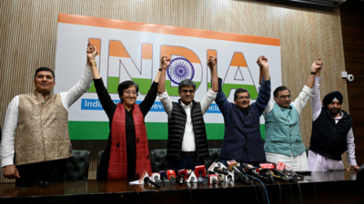

AAP-Congress announce Delhi alliance for Lok Sabha polls: Should BJP be worried?

NEW DELHI: Opposition's INDIA (Indian National Developmental ..
As Prime Minister Narendra Modi on Saturday reached Gujarat, the BJP headquarters in New Delhi saw back-to-back meetings to finalise the election strategy. The Election Commission is likely to announce the dates for the Lok Sabha election 2024 after March 13 and now EC teams are on their state visits to review the poll preparedness. BJP chief JP Nadda chaired a meeting of party leaders who have been made in-charge of different states and took a report on how the campaign preparations are going.
BJP's huddle to finalise election strategy, Amit Shah, Nadda meet Adityanath

Of all the states, the most complex and interesting case is ..
Of all the states, the most complex and interesting case is ..
As Prime Minister Narendra Modi on Saturday reached Gujarat, the BJP headquarters in New Delhi saw back-to-back meetings to finalise the election strategy. The Election Commission is likely to announce the dates for the Lok Sabha election 2024 after March 13 and now EC teams are on their state visits to review the poll preparedness. BJP chief JP Nadda chaired a meeting of party leaders who have been made in-charge of different states and took a report on how the campaign preparations are going.
Haldwani violence accused Abdul Malik arrested from Delhi: Uttarakhand Police
Earlier today, Abdul Malik’s lawyers had moved an anticipatory bail application in the court of additional district and sessions judge, Haldwani.

The Uttarakhand Police has arrested the key accused in the Haldwani violence, Abdul Malik, and two others, a senior police official said.
As Prime Minister Narendra Modi on Saturday reached Gujarat, the BJP headquarters in New Delhi saw back-to-back meetings to finalise the election strategy. The Election Commission is likely to announce the dates for the Lok Sabha election 2024 after March 13 and now EC teams are on their state visits to review the poll preparedness. BJP chief JP Nadda chaired a meeting of party leaders who have been made in-charge of different states and took a report on how the campaign preparations are going.
Alexei Navalny's body handed over to his mother, aide says

Alexei Navalny, one of the fiercest critics of Russian President Vladimir Putin, died on February 16 in an Arctic penal colony where he was serving a 19-year sentence.
As Prime Minister Narendra Modi on Saturday reached Gujarat, the BJP headquarters in New Delhi saw back-to-back meetings to finalise the election strategy. The Election Commission is likely to announce the dates for the Lok Sabha election 2024 after March 13 and now EC teams are on their state visits to review the poll preparedness. BJP chief JP Nadda chaired a meeting of party leaders who have been made in-charge of different states and took a report on how the campaign preparations are going.
Hindustan Times - your fastest source for breaking news! Read now.
Alexei Navalny’s mother, Lyudmila Navalnaya, has been repeatedly demanding that her son’s body be handed over in accordance with the law. She alleged that Russian authorities were planning a secret burial for Alexei Navalny.
On Saturday, Ivan Zhdanov, the director of Navalny’s Anti-Corruption Foundation, announced that Alexei Navalny's body has been handed over to his mother.
Also Read | Alexei Navalny's death: When Vladimir Putin's fiercest critic flagged his 'freezing' Arctic prison
He also thanked “everyone” who had called on Russian authorities to return Navalny’s body to his mother.
“Thank you very much. Thanks to everyone who wrote and recorded video messages. You all did what you needed to do. Thank you. Alexei Navalny's body has been given to his mother,” Zhdanov wrote, according to AP.
'Sasuralwalon...': Priyanka Gandhi's message as she joins Rahul's yatra from Moradabad

Priyanka Gandhi Vadra joined Rahul Gandhi's Bharat Jodo Nyay Yatra in Moradabad on Saturday days after the yatra entered Uttar Pradesh. While her absence drew flak from BJP leaders who attributed it to a brother-sister rivalry, Priyanka Gandhi clarified that she had to be hospitalised because of her ill health and hence could not welcome the yatra to the state. As she joined it on Saturday from Moradabad, she started her speech by addressing the people as 'sasuralwalon' since her in-law's place is in Moradabad.
As Prime Minister Narendra Modi on Saturday reached Gujarat, the BJP headquarters in New Delhi saw back-to-back meetings to finalise the election strategy. The Election Commission is likely to announce the dates for the Lok Sabha election 2024 after March 13 and now EC teams are on their state visits to review the poll preparedness. BJP chief JP Nadda chaired a meeting of party leaders who have been made in-charge of different states and took a report on how the campaign preparations are going.